Capítulo7 Visualização
Nesta seção, focaremos na Visualização de dados (Data Visualization). A visualização consiste em uma etapa importante tanto para enxergar informações relevantes em nossas análises, como para apresentar os resultados obtidos. Para tanto, utilizaremos os recursos disponíveis no pacote ggplot2.
O ggplot2 foi idealizado por Hadley Wickham em sua tese de doutorado, em 2010, intitulada A Layered Grammar of Graphics. Desde então, tornou-se um dos pacotes mais populares para a confecção de gráficos elegantes e versáteis, tendo como base a gramática de gráficos.
O conceito de gramática de gráficos foi proposto originalmente no livro The Grammar of Graphics, por Leland Wilkinson, em 2005. Sua lógica se assemelha à gramática linguística na qual, para formularmos uma frase inteligível, devemos seguir uma ordem coerente de palavras. De modo semelhante, para construirmos gráficos a partir do ggplot2, devemos ter em mente quais são os seus fundamentos gramaticais.
Basicamente, a gramática de gráficos está dividida em 7 camadas, podendo, ou não, estarem juntas, simultaneamente, em um só gráfico. A sua construção variará de acordo com o tipo de gráfico, além da necessidade e subjetividade do cientista de dados. As camadas podem ser classificadas como:
Dados (Data): se refere ao data frame a ser utilizado para a confecção gráfica. É relevante ter noção sobre os tipos de variáveis que o compõe (qualitativas ou quantitativas), a fim de utilizá-las de maneira correta;
Estéticas (Aesthetics): caracterizada pelo mapeamento em formas visuais, como a disposição das variáveis no plano cartesiano e a designação de cores, formas e tamanhos às variáveis;
Geometrias (Geometries): representação geométrica do gráfico, seja em pontos, linhas, barras, caixas etc.;
Facetas (Facets): é a forma de exibição dos gráficos de acordo com uma variável de interesse, podendo ser divididos em duas grades, em múltiplas grades ou simplesmente de forma individualizada;
Estatísticas (Statistics): são os elementos de estatística calculados e presentes no gráfico, podendo ser a média, uma linha de tendência etc.;
Coordenadas (Coordinates): definição das dimensões das coordenadas de acordo com o interesse;
Tema (Theme): Cores, fonte do texto, tamanhos, formatações, legendas.

Figure 7.1: Representação das 7 camadas presentes na gramática de gráficos, as quais utilizamos no ggplot2. Fonte: The Grammar of Graphics, 2005.
Portanto, a essência do ggplot2 é a construção gráfica em camadas. A página The R Graph Gallery compila uma série de exemplos gráficos possíveis de serem realizados no R, a partir do ggplot2, disponibilizando os códigos para que outros possam reproduzí-los e se inspirarem em novas criações.
A seguir, veremos as aplicações das diversas possibilidades gráficas e a lógica gramatical por trás de tudo. Para isso, devemos rodar o pacote ggplot2:
library(ggplot2)Caso você não tenha instalado o ggplot2, prossiga da seguinte maneira:
install.packages("ggplot2")
library(ggplot2)Para verificar todos os conteúdos presentes no ggplot2, execute o seguinte comando:
ls("package:ggplot2")Se você rodou o comando, notou que o ggplot2 possui mais de 1000 funcionalidades! Mas, apesar da complexidade que este pacote carrega, suas ferramentas básicas são fáceis de serem assimiladas. A seguir, daremos os primeiros passos para construir os principais gráficos em ggplot2, para que, posteriormente, o leitor possa explorar com propriedade estas vastas funcionalidades presentes no pacote.
Nos exemplos a seguir, utilizaremos alguns bancos de dados que podem ser baixados clicando aqui.
7.1 Gráfico de Dispersão
O primeiro gráfico que construiremos será o de dispersão. Esse tipo de gráfico é muito útil para determinar a tendência dos dados, seja linear ou não-linear, principalmente tratando de duas variáveis contínuas. Além disso, permite identificar observações atípicas. Para tanto, utilizaremos dados de alunos da disciplina Estatística Aplicada, presentes no arquivo dados_alunos.csv.
library(readr)
dados_alunos <- read_csv("dados_ggplot2/dados_alunos.csv")dados_alunos# A tibble: 64 x 7
sexo idade altura peso horas_estudo media_ponderada futuro
<chr> <dbl> <dbl> <dbl> <dbl> <dbl> <chr>
1 M 23 1.75 80 2 7.5 academico
2 F 19 1.67 65 2 8.3 mercado
3 M 19 1.7 90 3 6.9 mercado
4 M 22 1.73 87 3 7.1 academico
5 M 19 1.83 71 2 6.5 mercado
6 M 19 1.8 80 3 8.6 mercado
7 M 20 1.9 90 2 7.8 academico
8 F 20 1.6 55 1 8 mercado
9 F 24 1.62 55 2 8.2 academico
10 F 18 1.64 60 2 7.3 mercado
# ... with 54 more rowsA base de dados possui 64 observações e 7 variáveis, as quais informam o sexo, idade, altura (em metros), peso (em kg), horas de estudo (por dia), média ponderada no curso e perspectiva futura após a graduação.
Neste primeiro momento, utilizaremos as variáveis altura e peso para construir o gráfico de pontos.
ggplot(data = dados_alunos,
mapping = aes(x = altura,
y = peso)) +
geom_point()A primeira camada do nosso gráfico é dada pela função ggplot(). O argumento data = recebe o objeto dados_alunos, ou seja, recebe a base de dados que importamos anteriormente e que utilizaremos para construir o gráfico. Em seguida, o argumento mapping = define a estética do gráfico a partir da função aes(), sendo atribuído ao eixo x a variável altura (x = altura) e ao eixo y, a variável peso (y = peso). Por fim, criamos uma última camada referente ao tipo de geometria adotado no gráfico, no caso, a geometria de pontos geom_point().
Perceba que as camadas são unidas por um sinal de +. Portanto, a combinação das funções ggplot() e geom_point() define o tipo de gráfico resultante.
Para se ter uma noção de como foi gerado o gráfico e entender melhor a lógica da gramática de gráficos, rodaremos o código anterior por partes.
ggplot(data = dados_alunos)Ao definir somente o argumento data = dados_alunos na função ggplot(), o ggplot2 nos retorna um gráfico vazio, pois indicamos apenas qual a base de dados que utilizaremos, sem fornecer informações referentes à estrutura do gráfico.
ggplot(data = dados_alunos,
mapping = aes(x = altura,
y = peso))
Agora, indicando as variáveis mapeadas nos eixos x e y, temos um gráfico com as coordenadas definidas, porém sem ter os dados plotados, pois ainda não definimos qual o tipo de geometria será utilizada.
ggplot(data = dados_alunos,
mapping = aes(x = altura,
y = peso)) +
geom_point()Assim, ao definir a geometria de pontos geom_point(), os dados são inseridos no gráfico.
Portanto, para os que estão começando a utilizar o ggplot2, recomendo executar comando por comando, pois auxiliará na compreensão da montagem dos gráficos.
7.1.1 Cores
Há a possibilidade de incluir outras variáveis ao gráfico anterior. Por exemplo, dentro da função aes(), podemos incluir o argumento color = sexo para distinguir a coloração dos pontos de acordo com o sexo dos alunos.
ggplot(data = dados_alunos,
mapping = aes(x = altura,
y = peso,
color = sexo)) +
geom_point()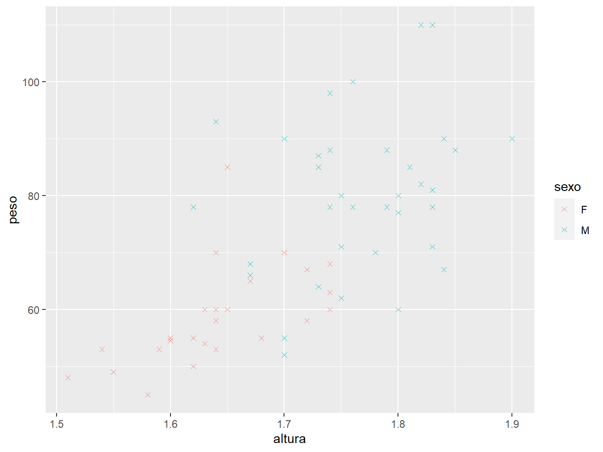
7.1.2 Formatos
Podemos realizar algumas modificações em relação à aparência dos pontos, como por exemplo, alterar seu formato utilizando o argumento shape = dentro da função geom_point().
ggplot(data = dados_alunos,
mapping = aes(x = altura,
y = peso,
color = sexo)) +
geom_point(shape = 4)Cada tipo de formato é representado por um número, cujas legendas podem ser conferidas na figura 7.2.
Figure 7.2: Legendas dos tipos de formatos de pontos, indicados no argumento shape. Fonte: R for Data Science, 2017.
Além de atribuir um único tipo de formato aos pontos, podemos distinguir variáveis a partir dos formatos. Para isso, utilizamos o argumento shape dentro da função aes(), indicando qual variável da base de dados será atribuída ao argumento. Como exemplo, utilizaremos novamente a variável sexo.
ggplot(data = dados_alunos,
mapping = aes(x = altura,
y = peso,
shape = sexo)) +
geom_point()
Como padrão, o argumento atribui aos pontos os formatos 16 e 17. Para alterá-los, utilizamos a função scale_shape_manual(), com o argumento values recebendo um vetor com os números dos formatos que se deseja atribuir.
ggplot(data = dados_alunos,
mapping = aes(x = altura,
y = peso,
shape = sexo)) +
geom_point()+
scale_shape_manual(values = c(13, 24))Perceba que a ordem dos números no vetor segue a ordem das variáveis, ou seja, o formato 13 é referente ao sexo feminino (F) e o formato 24, ao sexo masculino (M).
7.1.3 Tamanho
Ainda, podemos alterar o tamanho dos pontos. Para isso, utilizamos o argumento size dentro da função geom_point().
ggplot(data = dados_alunos,
mapping = aes(x = altura,
y = peso,
color = sexo)) +
geom_point(size = 5)Caso o argumento size não seja especificado, por padrão, o valor adotado é igual a 1. Assim, podemos gerar ponto maiores designando valores superiores a 1, ou senão, pontos menores, atribuindo valores inferiores a 1.
Outra possibilidade é diferenciar as idades dos alunos pelo tamanho dos pontos. Para isso, o argumento size receberá a variável idade, dentro a função aes().
ggplot(data = dados_alunos,
mapping = aes(x = altura,
y = peso,
color = sexo,
size = idade)) +
geom_point()7.1.4 Transparência
Por fim, podemos diferenciar as idades pela transparência dos pontos, utilizando o argumento alpha.
ggplot(data = dados_alunos,
mapping = aes(x = altura,
y = peso,
color = sexo,
alpha = idade)) +
geom_point(size = 4)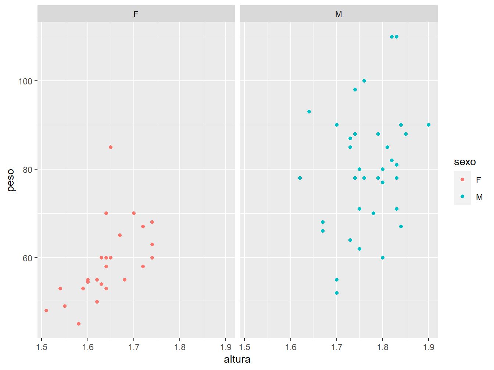
Você deve ter percebido que um mesmo argumento pode ser utilizado de diferentes maneiras. Nos exemplos anteriores, utilizamos os argumentos shape e size dentro da função aes(), mas também na geom_point(). Quando utilizamos dentro da aes(), o argumento sempre recebe uma variável da base de dados. Por outro lado, quando utilizada na geom_point(), eles recebem um valor genérico contido em uma determinada escala. Assim, devemos nos atentar a esses detalhes para construirmos os gráficos de acordo com as especificações e posições dos argumentos.
7.1.5 Facetas (Facets)
As facetas (facets) replicam os gráficos, separando-os em grades (grids), de acordo com uma variável categórica do nosso banco de dados. Para ficar mais claro, vamos exemplificar as facetas. Para isso, utilizaremos a função facet_wrap().
ggplot(data = dados_alunos,
mapping = aes(x = altura,
y = peso,
color = sexo))+
geom_point()+
facet_wrap(~sexo, ncol = 2)A função facet_wrap() entra como uma terceira camada ao gráfico. Como argumento, utilizamos a fórmula ~sexo para dizer que a variável sexo será utilizada como fator para quebrar o gráfico em duas grades. Como se pode perceber, cada grade recebe somente os dados referentes aos respectivos sexos. Logo em seguida, temos um outro argumento que nos indica a disposição dos gráficos. No caso do ncol, os gráficos ficam dispostos lado a lado, sendo que para o nrow os gráficos se dispõem um embaixo do outro, como podemos ver a seguir.
ggplot(data = dados_alunos,
mapping = aes(x = altura,
y = peso,
color = sexo))+
geom_point()+
facet_wrap(~sexo, nrow = 2)Ainda podemos associar duas variáveis categóricas ao facet. Como exemplo, adicionaremos a variável futuro à fórmula futuro~sexo, a fim de verificarmos as perspectivas dos alunos sobre seus futuros após a graduação, de acordo com o sexo.
ggplot(data = dados_alunos,
mapping = aes(x = altura,
y = peso,
color = sexo))+
geom_point()+
facet_wrap(futuro~sexo, ncol = 4)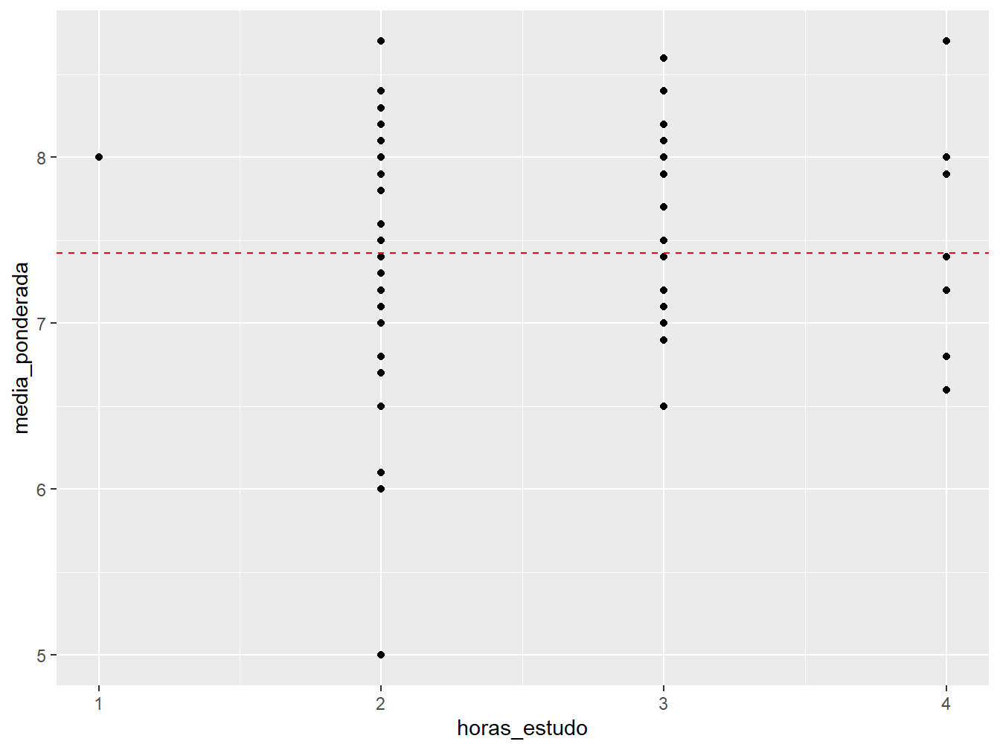
Perceba que o número atribuído ao argumento ncol = define o número de colunas do facet. A mesma lógica é válida para o nrow =, porém definindo o número de linhas.
7.1.6 Linhas de referência
Podemos adicionar linhas de referência aos nossos gráficos.
Linhas horizontais
Para criar linhas horizontais, utilizamos a função geom_hline(). Como argumento, devemos usar a yintercept, que indica em qual ponto do eixo y será traçada a linha de referência horizontal.
No exemplo a seguir, será construído um gráfico de dispersão entre as horas de estudo e a média ponderada dos estudantes. A linha de referência será a média (mean()) da média ponderada dos alunos, indicada no argumento yintercept.
ggplot(data = dados_alunos,
mapping = aes(x = horas_estudo,
y = media_ponderada))+
geom_point()+
geom_hline(mapping = aes(yintercept = mean(media_ponderada)),
color = "red",
linetype = 2)Perceba que o argumento yintercept foi colocado dentro da função aes(), pois utilizamos uma variável da nossa base de dados para construir a linha. Além disso, atribuímos a cor vermelha à linha (color = "red") e definimos seu estilo com o argumento linetype. Cada tipo de linha é representado por um número, cuja legenda pode ser conferida na figura 7.3.
Figure 7.3: Possíveis tipos de linhas a partir do argumento linetype. Fonte: R Graphics Cookbook.
Linhas verticais
As linhas de referência vertical são análogas às linhas horizontais. São construídas a partir da função geom_vline(), que recebe o argumento xintercept = para indicar em qual ponto do eixo x será traçada a linha.
ggplot(data = dados_alunos,
mapping = aes(x = media_ponderada,
y = horas_estudo))+
geom_point()+
geom_vline(mapping = aes(xintercept = mean(media_ponderada)),
color = "red",
linetype = 2)Linhas diagonais
Já as linhas diagonais são feitas com a geom_abline(). Essa função desenha qualquer linha que siga a equação y = a + b*x, sendo a o intercepto com o eixo y, ou seja, o ponto onde a reta toca no eixo y, representado pelo argumento intercept, e b, o coeficiente angular da reta, indicado pelo argumento slope.
# Calculando o intercepto e o coeficiente angular
lm(formula = iris$Petal.Length ~ iris$Petal.Width)
Call:
lm(formula = iris$Petal.Length ~ iris$Petal.Width)
Coefficients:
(Intercept) iris$Petal.Width
1.084 2.230 # Gráfico com geom_abline()
ggplot(iris,aes(x = Petal.Width,
y = Petal.Length,
color = Species))+
geom_point()+
geom_abline(intercept = 1.084,
slope = 2.23,
size = 2)
Como exemplo, utilizamos a base de dados nativa do R iris para criar um gráfico de dispersão entre a largura e o comprimento das pétalas de flores. Com a função lm(), calculamos o intercepto e o coeficiente angular entre as variáveis selecionadas, informando primeiro a variável do eixo y, seguida da variável do eixo x, tendo entre ambas o símbolo ~.
Uma vez calculados o intercepto e o coeficiente angular, na função geom_abline() especificamos os argumentos intercept = 1.084 e slope = 2.23 para informar que a reta começa na coordenada (0 , 1.084), possuindo um coeficiente de angulação igual a 2,23.
Perceba que, em um mesmo gráfico, utilizamos duas camadas geométricas. Nesse último exemplo, a função geom_point() foi sobreposta pela geom_abline(), pois segundo a lógica da gramática dos gráficos, esses são construídos em camadas, portanto, a camada geom_point() vem antes da geom_abline(), sendo então sobreposta pela última.
7.1.7 Linhas de regressão
Também podemos incluir linhas de regressão ajustadas aos dados, a partir da função geom_smooth().
ggplot(data = dados_alunos,
mapping = aes(x = altura,
y = peso))+
geom_point()+
geom_smooth()
Neste primeiro gráfico, definimos dentro da função ggplot() os eixos x = altura e y = peso. Sendo assim, essa estética é utilizada por ambas as funções geométricas, tanto a geom_point(), como a geom_smooth().
Podemos definir na função geom_smooth() o tipo de método para gerar a linha de regressão. Por padrão, o metódo utilizado é o loess (sigla de locally estimated scatterplot smoothing).
Para alterar o método, utilizamos o argumento method = na função geom_smooth(). No exemplo a seguir, definimos o método "lm", ou seja, modelo linear (linear model).
ggplot(data = dados_alunos,
mapping = aes(x = altura,
y = peso))+
geom_point()+
geom_smooth(method = "lm")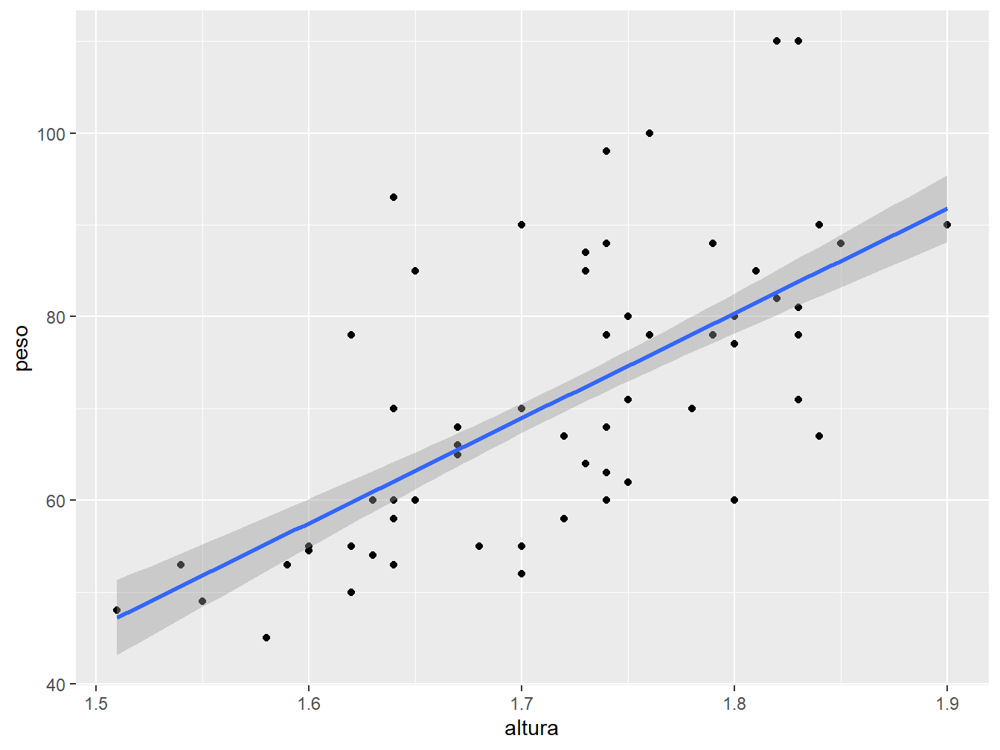
Perceba que a linha de regressão apresenta uma região sombreada em seu entorno. Essa região é o intervalo de confiança que, por padrão, adota-se 95% de confiança. Para alterar o nível de confiança, utilizamos o argumento level. No exemplo a seguir, adotaremos 70% de confiança (level = 0.70).
ggplot(data = dados_alunos,
mapping = aes(x = altura,
y = peso))+
geom_point()+
geom_smooth(method = "lm",
level = 0.70)
Para desativar o intervalo de confiança, utilizamos o argumento se = FALSE.
ggplot(data = dados_alunos,
mapping = aes(x = altura,
y = peso))+
geom_point()+
geom_smooth(method = "lm",
se = FALSE)Ainda podemos alterar alguns fatores estéticos da reta, como por exemplo a cor, tamanho e tipo de linha.
ggplot(data = dados_alunos,
mapping = aes(x = altura,
y = peso))+
geom_point()+
geom_smooth(method = "lm",
se = FALSE,
color = "red",
size = 1,
linetype = 5)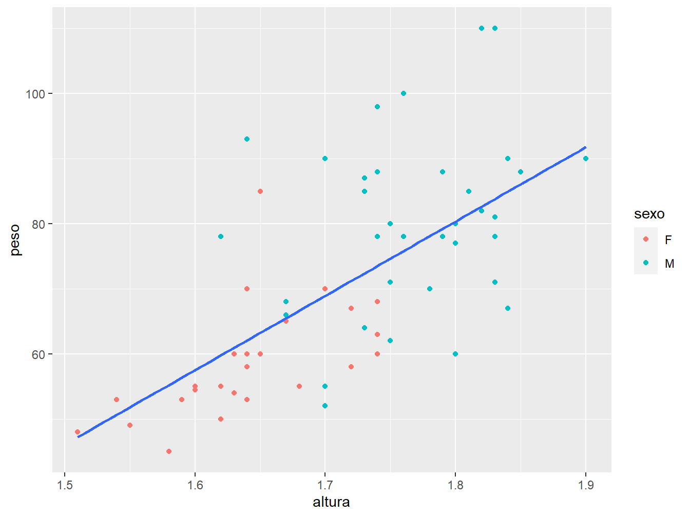
Para construir linhas de regressão para diferentes grupos, em um mesmo gráfico, podemos prosseguir de diferentes maneiras. No exemplo a seguir, distinguiremos os pontos por cores, de acordo com o sexo.
ggplot(data = dados_alunos)+
geom_point(mapping = aes(x = altura,
y = peso,
color = sexo))+
geom_smooth(mapping = aes(x = altura,
y = peso),
method = "lm",
se = FALSE)Perceba que, apesar de ter distinguido os pontos de acordo com o sexo, foi traçada uma única linha de regressão para ambos os sexos. Para construir uma linha para cada sexo, precisamos agrupar a variável sexo na função aes() da geom_smooth(), a partir do argumento group =.
ggplot(data = dados_alunos)+
geom_point(mapping = aes(x = altura,
y = peso,
color = sexo))+
geom_smooth(mapping = aes(x = altura,
y = peso,
group = sexo),
method = "lm",
se = FALSE)Nesses últimos exemplo, percaba que definimos a estética do gráfico (aes()) dentro de cada geometria e não mais na função ggplot(). Isso permite definir as estéticas individuais de cada geometria.
Caso contrário, poderíamos definir uma mesma estética para ambas as geometrias, definindo-a como função da ggplot(). No exemplo a seguir, traremos uma outra solução para o problema das linhas de regressão por categoria, definindo a aes() na função ggplot().
ggplot(data = dados_alunos,
mapping = aes(x = altura,
y = peso,
color = sexo))+
geom_point()+
geom_smooth(method = "lm",
se = FALSE)Nesse caso, definimos o fator cor (color) para diferenciarmos o sexo, tanto para a geom_point(), como para a geom_smooth(). Assim, perceba que os ponto e as retas de regressão ficaram com cores diferentes, de acordo com o sexo.
Para saber mais sobre as linhas de regressão no ggplot2, confira os capítulos 5.6 a 5.9 do excelente livro R Graphics Cookbook.
7.1.8 Títulos e rótulos
De maneira intuitiva, para colocarmos títulos e rótulos nos gráficos, adicionamos a camada labs(). Como argumento, indicamos qual fator desejamos (re)nomear. Atente-se ao fato de que as nomeações devem estar entre aspas.
ggplot(data = dados_alunos,
mapping = aes(x = altura,
y = peso,
color = sexo,
alpha = idade))+
geom_point(size = 4)+
labs(
x = "Altura (m)",
y = "Peso (kg)",
color = "Gênero",
alpha = "Idade (anos)",
title = "Gráfico de dispersão",
subtitle = "Altura x Peso",
caption = "Fonte: Disciplina Estatística Aplicada/ESALQ."
)Podemos adicionar mais alguns ajustes, como centralizar o título e subtítulo, colocar a fonte à esquerda, além de ocultar as legendas.
ggplot(data = dados_alunos,
mapping = aes(x = altura,
y = peso,
color = sexo,
alpha = idade))+
geom_point(size = 4)+
labs(
x = "Altura (m)",
y = "Peso (kg)",
color = "Gênero",
alpha = "Idade (anos)",
title = "Gráfico de dispersão",
subtitle = "Altura x Peso",
caption = "Fonte: Disciplina Estatística Aplicada/ESALQ."
)+
theme(plot.title = element_text(hjust = 0.5),
plot.subtitle = element_text(hjust = 0.5),
plot.caption = element_text(hjust = 0),
legend.position = "none")Nesse caso, conjuntamente à função theme(), utilizamos outra função, a element_text(), para ajustar o posicionamento horizontal do título (plot.title) e do subtítulo (plot.subtitle), além da fonte (plot.caption). O argumento hjust apresenta uma escala de 0 a 1, sendo 0 o posicionamento mais à esquerda do gráfico. Assim, para centralizarmos os textos, definimos o ajuste na metade da escala (hjust = 0.5).
No caso das legendas, ainda dentro da função theme(), utilizamos o argumento legend.position = "none" para ocultar todas as legendas presentes no gráfico.
Caso queira ocultar somente uma das legendas, utilizamos a função guides(), informando a variável cuja legenda se deseja ocultar.
ggplot(data = dados_alunos,
mapping = aes(x = altura,
y = peso,
color = sexo,
alpha = idade))+
geom_point(size = 4)+
labs(
x = "Altura (m)",
y = "Peso (kg)",
color = "Gênero",
alpha = "Idade (anos)",
title = "Gráfico de dispersão",
subtitle = "Altura x Peso",
caption = "Fonte: Disciplina Estatística Aplicada/ESALQ."
)+
theme(plot.title = element_text(hjust = 0.5),
plot.subtitle = element_text(hjust = 0.5),
plot.caption = element_text(hjust = 0))+
guides(alpha = FALSE)Nesse exemplo, ocultamos apenas a legenda da variável alpha, atribuindo o valor lógico FALSE.
Para saber mais sobre títulos, rótulos e aparência geral dos gráficos, confira os capítulos 9 e 10 do livro R Graphics Cookbook.
7.1.9 Temas
Existe a possibilidade de escolhermos outros temas para confeccionar nossos gráficos. Podemos criar temas a partir do zero ou senão utilizar aqueles presentes no ggplot2 pela função theme_. A seguir demonstraremos alguns dos temas pré-configurados.
ggplot(data = dados_alunos,
mapping = aes(x = altura,
y = peso,
color = sexo,
alpha = idade))+
geom_point(size = 4)+
labs(
x = "Altura (m)",
y = "Peso (kg)",
color = "Gênero",
alpha = "Idade (anos)",
title = "Gráfico de dispersão",
subtitle = "Altura x Peso",
caption = "Fonte: Disciplina Estatística Aplicada/ESALQ."
)+
theme_bw()+
theme(plot.title = element_text(hjust = 0.5),
plot.subtitle = element_text(hjust = 0.5),
plot.caption = element_text(hjust = 0))+
guides(alpha = FALSE)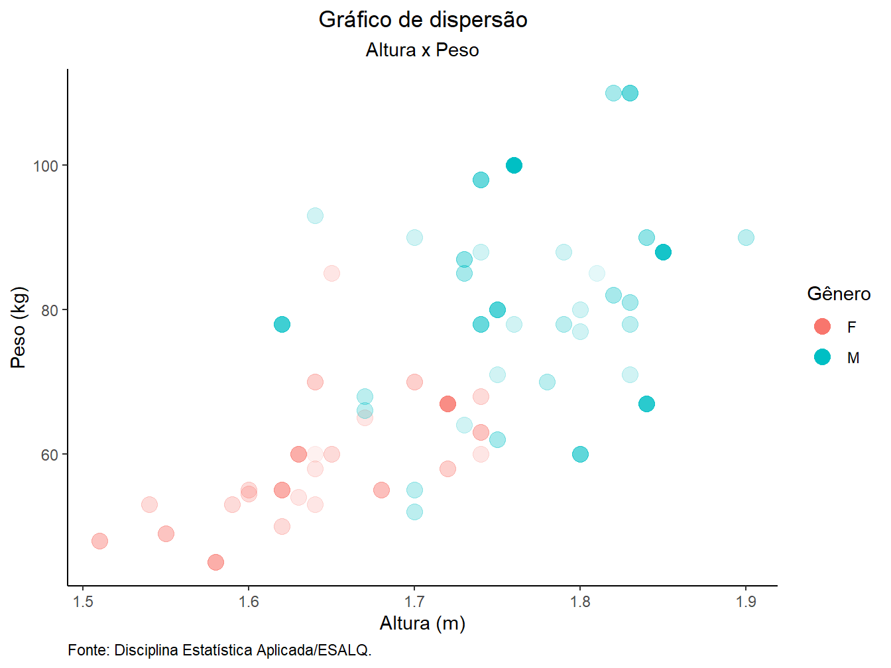
ggplot(data = dados_alunos,
mapping = aes(x = altura,
y = peso,
color = sexo,
alpha = idade))+
geom_point(size = 4)+
labs(
x = "Altura (m)",
y = "Peso (kg)",
color = "Gênero",
alpha = "Idade (anos)",
title = "Gráfico de dispersão",
subtitle = "Altura x Peso",
caption = "Fonte: Disciplina Estatística Aplicada/ESALQ."
)+
theme_classic()+
theme(plot.title = element_text(hjust = 0.5),
plot.subtitle = element_text(hjust = 0.5),
plot.caption = element_text(hjust = 0))+
guides(alpha = FALSE)ggplot(data = dados_alunos,
mapping = aes(x = altura,
y = peso,
color = sexo,
alpha = idade))+
geom_point(size = 4)+
labs(
x = "Altura (m)",
y = "Peso (kg)",
color = "Gênero",
alpha = "Idade (anos)",
title = "Gráfico de dispersão",
subtitle = "Altura x Peso",
caption = "Fonte: Disciplina Estatística Aplicada/ESALQ."
)+
theme_dark()+
theme(plot.title = element_text(hjust = 0.5),
plot.subtitle = element_text(hjust = 0.5),
plot.caption = element_text(hjust = 0))+
guides(alpha = FALSE)
7.2 Gráfico de Barras
Para a construção do gráfico de barras, dependendo do tipo de dados que queremos representar, podemos prosseguir a partir de duas vias. A primeira é utilizando a função geom_col(), sendo a outra, a geom_bar(). A seguir trataremos com detalhes ambas as funções.
geom_col()
Utilizamos a função geom_col() para construir gráficos de barras em que indicamos uma variável categórica ao eixo x e uma variável quantitativa ao eixo y, sendo essa última, a que determinará a altura das barras. Para a elaboração dos exemplos, utilizaremos dados referentes à produção de milho e trigo, disponível no arquivo milho_trigo.csv.
producao <- read_csv("dados_ggplot2/milho_trigo.csv")
producao# A tibble: 8 x 3
Local Cultura Valor
<chr> <chr> <dbl>
1 Brasil Milho 2.6
2 Brasil Trigo 1.52
3 China Milho 3.94
4 China Trigo 3.07
5 India Milho 1.62
6 India Trigo 2.08
7 EUA Milho 7.38
8 EUA Trigo 2.48A base de dados apresenta 8 observações e 3 variáveis. A variável Local possui os países Brasil, China, Índia e Estado Unidos; a Cultura contém as culturas agrícolas milho e trigo; e Valor representa a produtividade média anual dos países, em toneladas por hectare, entre 1961 e 2019.
7.2.0.1 Cores
Nesse primeiro exemplo, queremos criar um gráfico de barras para representar a produção média de milho e trigo em cada um dos países. Para isso, utilizamos a função geom_col(). Perceba que, para diferenciarmos as porções da barra que representam as produções de cada cereal, podemos utilizar os argumentos estéticos color = Item e fill = Item.
O argumento color = somente colore as bordas das colunas, enquanto que o fill = preenche a barra com cores, de acordo os valores das variáveis milho e trigo.
# Argumento "color ="
ggplot(data = producao,
aes(x = Local,
y = Valor,
color = Cultura))+
geom_col()#Argumento "fill ="
ggplot(data = producao,
aes(x = Local,
y = Valor,
fill = Cultura))+
geom_col()
7.2.0.2 Posição
Caso queira alterar a disposição das colunas, podemos utilizar o argumento position = e especificar o ajuste desejado, tendo como opções: "stack", "dodge" e "fill".
# Posição "stack"
ggplot(data = producao,
aes(x = Local,
y = Valor,
fill = Cultura))+
geom_col(position = "stack")Perceba que a posição "stack" é a opção padrão do argumento position =, portanto, caso o argumento não seja especificado, a disposição do gráfico de colunas será a "stack". Essa disposição de barras representa os valores absolutos de produtividade das culturas em apenas uma barra, de acordo com o país.
# Posição "dodge"
ggplot(data = producao,
aes(x = Local,
y = Valor,
fill = Cultura))+
geom_col(position = "dodge")Já a posição "dodge" representa as cultura em colunas separadas, de acordo com o país, ainda representando valores absolutos de produtividade.
# Posição "fill"
ggplot(data = producao,
aes(x = Local,
y = Valor,
fill = Cultura))+
geom_col(position = "fill")Por último, a posição "fill" constrói barras iguais, com escala de 0 a 1, preenchendo-as com os valores absolutos das produções de milho e trigo, de acordo com o país.
7.2.0.3 Legendas
Podemos adicionar legendas às nossas colunas, a partir da função geom_text(). Nos seguintes caso, demonstraremos como inserir as legendas nos três tipos de posição, indicando os valores de produtividades referentes a cada cultura e país.
# Posição "stack"
ggplot(data = producao,
aes(x = Local,
y = Valor,
fill = Cultura))+
geom_col(position = "stack")+
geom_text(aes(label = Valor),
color = "white",
vjust = 1.5,
position = position_stack(0.9))
# Posição "dodge"
ggplot(data = producao,
aes(x = Local,
y = Valor,
fill = Cultura))+
geom_col(position = "dodge")+
geom_text(aes(label = Valor),
color = "white",
vjust = 1.5,
position = position_dodge(0.9))
# Posição "fill"
ggplot(data = producao,
aes(x = Local,
y = Valor,
fill = Cultura))+
geom_col(position = "fill")+
geom_text(aes(label = Valor),
color = "white",
vjust = 2.5,
position = position_fill(0.9))
Note que a estrutura da função geom_text() é quase idêntica para as três posições, apenas alterando alguns valores e especificações. Primeiramente, definimos na função aes() a variável utilizada para ilustrar as legendas, no caso, a Valor. Em seguida, definimos a cor da legenda, sendo definida como branca (color = "white"). O argumento vjust = ajusta o posicionamento vertical das legendas, tendo como referência cada uma das barras; nesse caso, faça os ajustes testando valores, sendo possível atribuir valores negativos, fazendo com que a legenda suba. Por fim, a função position_, contida no argumento position =, ajusta o posicionamento das legendas em cada um dos setores da barra, de acordo com o tipo de posição adotada no geom_col(), seja o stack (position_stack()), dodge (position_dodge()) ou fill (position_fill()).
geom_bar()
A função geom_bar() constrói gráficos de barras a partir da contagem de valores presentes em uma variável categórica. Como exemplo, utilizaremos a base de dados diamonds, presente no prórprio pacote ggplot2.
diamonds# A tibble: 53,940 x 10
carat cut color clarity depth table price x y z
<dbl> <ord> <ord> <ord> <dbl> <dbl> <int> <dbl> <dbl> <dbl>
1 0.23 Ideal E SI2 61.5 55 326 3.95 3.98 2.43
2 0.21 Premium E SI1 59.8 61 326 3.89 3.84 2.31
3 0.23 Good E VS1 56.9 65 327 4.05 4.07 2.31
4 0.29 Premium I VS2 62.4 58 334 4.2 4.23 2.63
5 0.31 Good J SI2 63.3 58 335 4.34 4.35 2.75
6 0.24 Very Good J VVS2 62.8 57 336 3.94 3.96 2.48
7 0.24 Very Good I VVS1 62.3 57 336 3.95 3.98 2.47
8 0.26 Very Good H SI1 61.9 55 337 4.07 4.11 2.53
9 0.22 Fair E VS2 65.1 61 337 3.87 3.78 2.49
10 0.23 Very Good H VS1 59.4 61 338 4 4.05 2.39
# ... with 53,930 more rowsEssa tibble apresenta 53.940 observações e 10 variáveis, referentes às características de uma amostra de diamantes. Dessas variáveis, utilizaremos apenas a cut, que informa a qualidade de corte dos diamantes, sendo categorizadas em Fair, Good, Very Good, Premium e Ideal. Assim sendo, faremos um gráfico de barras que conta a quantidade de diamantes que se encaixam em cada uma dessas categorias.
ggplot(diamonds,
aes(x = cut))+
geom_bar()Perceba que foi preciso informar apenas a variável categórica cut no eixo x, sendo o y construido, automaticamente, a partir da contagem dos diamantes que se encaixam nas respectivas categorias.
Podemos melhorar a apresentação do gráfico atribuindo cores às categorias. Para isso, utilizamos o argumento fill na função aes().
ggplot(diamonds,
aes(x = cut,
fill = cut))+
geom_bar()7.2.0.4 Coordenadas
O sistema de coordenadas padrão do ggplot2 é o cartesiano, onde os eixo x e y atuam de maneira independente para determinar a localização de cada ponto. De maneira simples, podemos inverter os eixos x e y utilizando a função coord_flip(), assim, dispomos as barras no sentido horizontal. O exemplo a seguir ilustra o caso.
ggplot(diamonds,
aes(x = cut,
fill = cut))+
geom_bar()+
coord_flip()
Podemos utilizar outras coordenadas para contruir diferentes tipos de gráficos, como é o caso dos gráficos de setores, os quais veremos a seguir.
7.3 Gráfico de Setores (Pizza)
Mais conhecido como gráfico de pizza, esse tipo gráfico é muito popular e simples de ser compreendido. Apesar disso, sua utilização deve ser cautelosa para não sobrecarregar em informação ou utilizá-lo de maneira inadequada. Normalmente, um gráfico de pizza visa representar a frequência relativa de valores, de acordo com uma variável categórica.
Para construí-lo no ggplot2, utilizamos do artifício coord_polar(), o qual altera a coordenada do gráfico de barras. A seguir, veremos uma demonstração com dados hipotéticos sobre o grau de instrução de indivíduos.
educ <- tibble(
Instrucao = c("Fundamental", "Médio", "Superior"),
Quantidade = c(150, 200, 60),
Porcentagem = round((Quantidade/sum(Quantidade)*100),2)
)
educ# A tibble: 3 x 3
Instrucao Quantidade Porcentagem
<chr> <dbl> <dbl>
1 Fundamental 150 36.6
2 Médio 200 48.8
3 Superior 60 14.6Assim, devemos proceder da seguinte maneira para construir o gráfico de setores:
1. Montar o gráfico de barras: devemos deixar vazio o eixo x (x = ""), definir os valores percentuais no eixo y (y = Porcentagem) e preencher a barra com a variável categórica (fill = Instrucao). Feito isso, atribuímos a geometria de barras (geom_col()), colorindo suas bordas com a cor preta (color = "black"), a fim de delimitar os segmentos do gráfico;
ggplot(data = educ,
mapping = aes(x = "",
y = Porcentagem,
fill = Instrucao))+
geom_col(color = "black")2. Legendas: utilizamos a geom_text() para definir a legenda das porcentagens dentro de cada setor da barra. Dentro da função aes(), definimos como rótulo (label =) a variável Porcentagem, sendo que a função paste(Porcentagem, "%") insere o símbolo de % logo após os valores de porcentagem. Por último, o argumento vjust = 0.5 ajusta a posição das legendas;
ggplot(data = educ,
mapping = aes(x = "",
y = Porcentagem,
fill = Instrucao))+
geom_col(color = "black")+
geom_text(aes(label = paste(Porcentagem, "%")),
position = position_stack(vjust = 0.5))
3. Coordenada: nesse ponto, utilizamos a função coord_polar() para tornar nosso gráfico redondo. O argumento theta = "y" indica que o eixo y deve ser adotado como referência para a alteração da coordenada e o start = indica por qual valor o gráfico deve começar (teste outro valores para ver a diferença);
ggplot(data = educ,
mapping = aes(x = "",
y = Porcentagem,
fill = Instrucao))+
geom_col(color = "black")+
geom_text(aes(label = paste(Porcentagem, "%")),
position = position_stack(vjust = 0.5))+
coord_polar(theta = "y",
start = 0)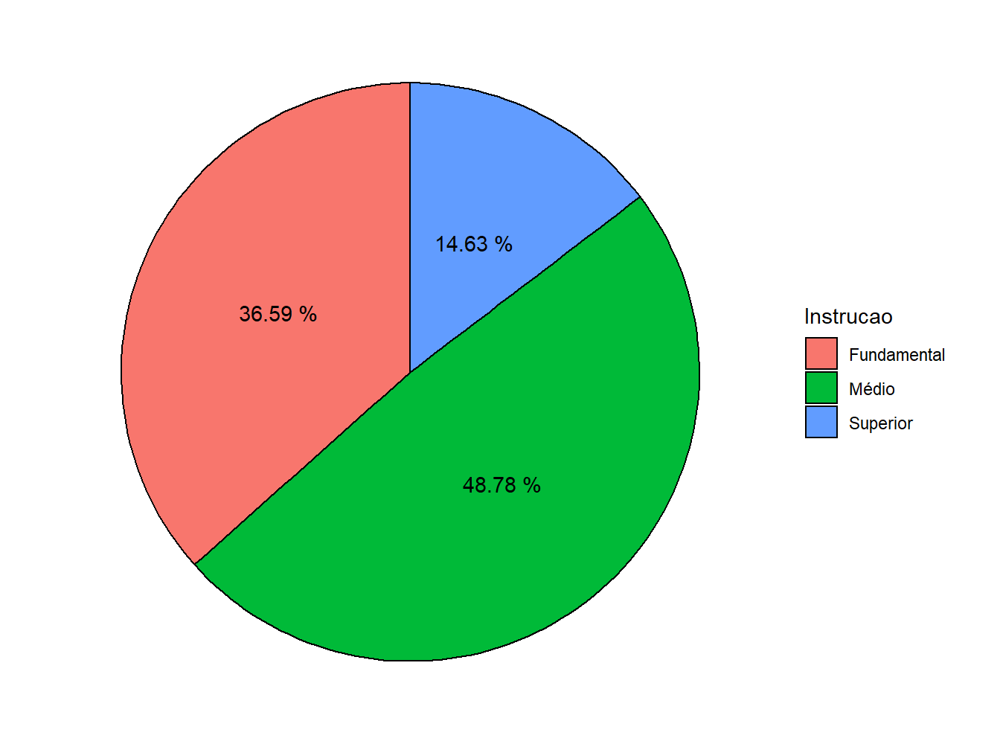
4. Retirar elementos: neste ponto, já temos um gráfico de pizza, porém poluído devido a presença das escalas, nome dos eixos e cor de fundo inadequada. Para alterar o fundo cinza para um branco, escolhemos o tema theme_minimal(). Em seguida, na função theme(), atribuímos a alguns argumentos o element_blank(), ou seja, função que retira os elementos de cena. Portanto, o axis.title = element_blank() retira os nomes dos eixos, o axis.text = element_blank() exclui o restante de texto presente no gráfico e o panel.grid = element_blank() omite o restante das linhas gráficas.
ggplot(data = educ,
mapping = aes(x = "",
y = Porcentagem,
fill = Instrucao))+
geom_col(color = "black")+
geom_text(aes(label = paste(Porcentagem, "%")),
position = position_stack(vjust = 0.5))+
coord_polar(theta = "y",
start = 0)+
theme_minimal()+
theme(
axis.title = element_blank(),
axis.text = element_blank(),
panel.grid = element_blank()
)5. Personalização: agora temos um gráfico de pizza autêntico. Podemos realizar mais algumas modificações estéticas, como definir uma paleta de cores com a scale_fill_brewer() e ajustar o nome na legenda com o labs().
ggplot(data = educ,
mapping = aes(x = "",
y = Porcentagem,
fill = Instrucao))+
geom_col(color = "black")+
geom_text(aes(label = paste(Porcentagem, "%")),
position = position_stack(vjust = 0.5))+
coord_polar(theta = "y",
start = 0)+
theme_minimal()+
theme(
axis.title = element_blank(),
axis.text = element_blank(),
panel.grid = element_blank()
)+
scale_fill_brewer(palette = "Pastel1")+
labs(fill = "Grau de Instrução")
7.4 Gráfico de Linhas
Os gráficos de linhas são muito utilizados para representar séries temporais, ou seja, a progressão de valores ao longo do tempo. Utilizamos a função geom_line() para construí-los. Para exemplificação, utilizaremos os dados de produtividade de milho entre 1961 e 2019, disponíveis no arquivo produtiv_milho.csv.
library(readr)
produtiv_milho <- read_csv("dados_ggplot2/produtiv_milho.csv")
produtiv_milho# A tibble: 236 x 3
Local Ano Valor
<chr> <dbl> <dbl>
1 Brasil 1961 1.31
2 Brasil 1962 1.30
3 Brasil 1963 1.31
4 Brasil 1964 1.16
5 Brasil 1965 1.38
6 Brasil 1966 1.31
7 Brasil 1967 1.38
8 Brasil 1968 1.34
9 Brasil 1969 1.31
10 Brasil 1970 1.44
# ... with 226 more rowsA base de dados apresenta 236 observações e 3 variáveis. A variável Local possui os países Brasil, China, Índia e Estado Unidos; a Ano dispõe de dados entre 1961 e 2019; e Valor representa a produtividade da cultura do milho, em toneladas por hectare.
Para o primeiro exemplo, utilizaremos apenas os dados referentes ao Brasil. Para isso, utilizaremos a função dplyr::filter, do pacote dplyr.
produtiv_br <- produtiv_milho %>%
filter(Local == "Brasil")
produtiv_br# A tibble: 59 x 3
Local Ano Valor
<chr> <dbl> <dbl>
1 Brasil 1961 1.31
2 Brasil 1962 1.30
3 Brasil 1963 1.31
4 Brasil 1964 1.16
5 Brasil 1965 1.38
6 Brasil 1966 1.31
7 Brasil 1967 1.38
8 Brasil 1968 1.34
9 Brasil 1969 1.31
10 Brasil 1970 1.44
# ... with 49 more rowsPortanto, o objeto produtiv_br possui apenas o país Brasil, apresentando 59 observações e 3 variáveis.
Para construir o gráfico de linhas, atribuiremos ao eixo x a variável Ano e ao eixo y, a variável Valor, além de definir a geometria de linha, ou seja, a geom_line().
ggplot(produtiv_br)+
geom_line(aes(x = Ano,
y = Valor))7.4.1 Cores
Podemos definir a cor da linha de maneira manual, utilizando o argumento color =. Porém, devemos nos atentar a alguns detalhes.
ggplot(produtiv_br)+
geom_line(aes(x = Ano,
y = Valor,
color = "blue"))
Perceba que o argumento color = "blue" nos retornou uma linha de coloração vermelha e não azul. Isto aconteceu pois o argumento foi colocado dentro da função aes() e esta espera uma coluna do banco de dados para mapear, assim, o valor "blue" é tratado como uma nova variável pertencente a todas as observações. Portanto, a linha é colorida de vermelho (padrão do ggplot2) associada à nova categoria “blue”.
Portanto, para colorirmos a linha de azul, devemos colocar o atributo color = fora da função aes().
ggplot(produtiv_br)+
geom_line(aes(x = Ano,
y = Valor),
color = "blue")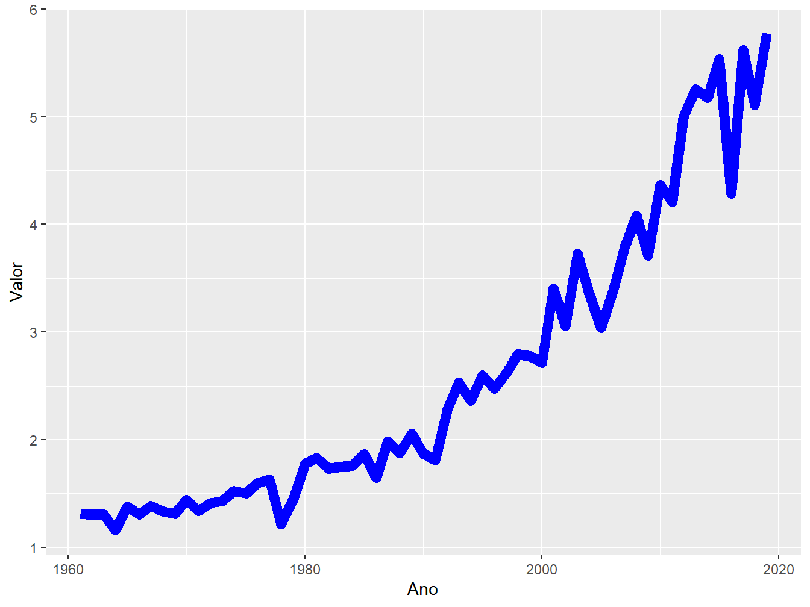
7.4.2 Tamanho
Para alterarmos o tamanho da linha, utilizamos o argumento size =. Agora que aprendemos com o exemplo anterior, devemos colocá-lo fora da função aes().
ggplot(produtiv_br)+
geom_line(aes(x = Ano,
y = Valor),
color = "blue",
size = 3)7.4.3 Geometrias
Nos gráficos de linhas, podemos mesclar diversas geometrias. A seguir, demonstraremos alguns exemplos.
ggplot(produtiv_br,
aes(x = Ano,
y = Valor))+
geom_line(color = "red")+
geom_point()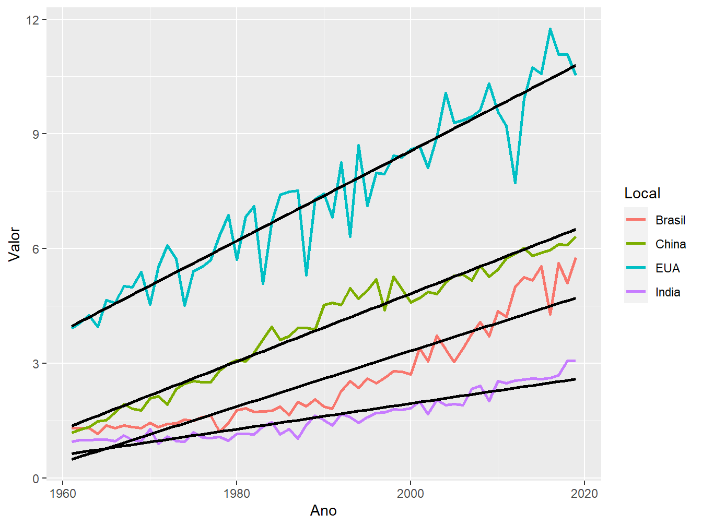
Aqui, podemos ver a associação do gráfico de linhas com o gráfico de pontos. Perceba que a estética (aes()) foi definida na função ggplot(), servindo tanto para o geom_line(), como para o geom_point().
ggplot(produtiv_milho,
aes(x = Ano,
y = Valor))+
geom_line(aes(color = Local),
size = 1)+
geom_smooth(aes(group = Local),
color = "black",
method = "lm",
se = FALSE)Agora, utilizando a base de dados produtiv_milho, unimos os quatro países em um mesmo gráfico. Designamos a variável Local (ou seja, os países) ao argumento color = para distingui-los com cores diferentes. Por se tratar de uma variável do nosso banco de dados, colocamos o argumento dentro da função aes(), contida na geom_line(). A outra camada geométrica é referente a reta de regressão, onde agrupamos a variável Local para que fosse possível traçar uma linha de regressão linear para cada variável.
7.4.4 Formatos
Também podemos diferenciar variáveis pelo formato das linhas, aplicando o argumento linetype = dentro da função aes().
ggplot(produtiv_milho,
aes(x = Ano,
y = Valor,
linetype = Local))+
geom_line(size = 2)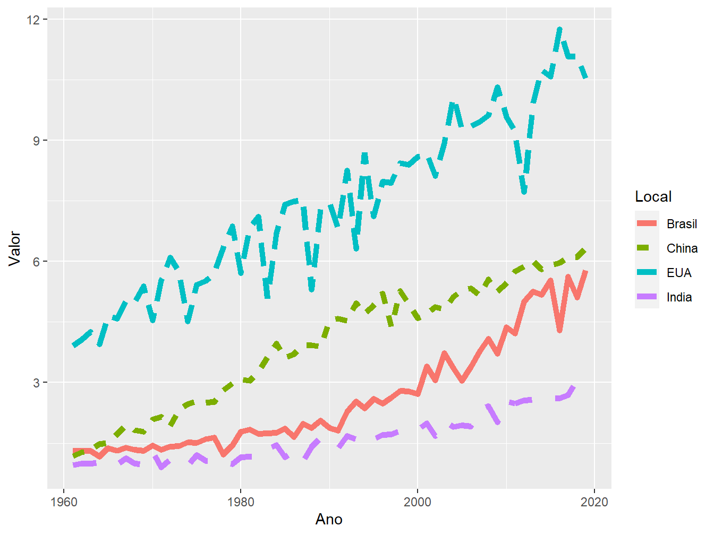
Ademais, poderiamos associar formatos e cores em um mesmo gráfico, a fim de diferenciar as variáveis.
ggplot(produtiv_milho,
aes(x = Ano,
y = Valor,
color = Local,
linetype = Local))+
geom_line(size = 2)7.4.5 Escalas
A família de funções scale_ confere propriedades para mudar as escalas de gráficos, cada qual com funções específicas. A seguir demonstraremos algumas delas.
Eixos
Para quebrarmos (breaks =) as escalas dos eixos x e y e redefinirmos outra sequência (seq()), utilizamos as funções scale_x_continuous() e scale_y_continuous(). Como fatores do argumento seq(), definimos o limite inferior (from =), o limite superior (to =) e a sequência da escala (by =).
ggplot(produtiv_milho,
aes(x = Ano,
y = Valor,
color = Local))+
geom_line(size = 1)+
scale_x_continuous(breaks = seq(from = 1961, to = 2019, by = 3))+
scale_y_continuous(breaks = seq(from = 0, to = 12, by = 1))
Perceba que, no eixo x, os anos ficaram apertados e mal apresentados. Para melhorar sua aparência, podemos alterar a angulação do texto (angle =) com o argumento axis.text.x = element_text(), dentro da função theme().
ggplot(produtiv_milho,
aes(x = Ano,
y = Valor,
color = Local))+
geom_line(size = 1)+
scale_x_continuous(breaks = seq(from = 1961, to = 2019, by = 3))+
scale_y_continuous(breaks = seq(from = 0, to = 12, by = 1))+
theme(axis.text.x = element_text(angle = -45))Ainda podemos inserir uma segunda escala aos nossos gráficos, utilizando a função scale_y_continuous(). Uma segunda escala é útil para representar, em um mesmo gráfico, variáveis que apresentem escala numérica diferente. Como exemplo, utilizaremos a base de dados sobre o PIB do Brasil, disponível no arquivo pib_br.csv.
pib_br <- read_csv("dados_ggplot2/pib_br.csv")
pib_br# A tibble: 18 x 3
ano var_anual valor
<dbl> <dbl> <dbl>
1 2000 2.8 3722.
2 2001 -0.09 3155.
3 2002 1.29 2842.
4 2003 -0.15 3063.
5 2004 4.34 3623.
6 2005 2 4770.
7 2006 2.81 5860.
8 2007 4.95 7314.
9 2008 4.03 8788.
10 2009 -1.11 8553.
11 2010 6.49 11224.
12 2011 2.99 13167.
13 2012 0.97 12292.
14 2013 2.06 12217.
15 2014 -0.38 12027.
16 2015 -4.59 8750.
17 2016 -4.25 8645.
18 2017 0.2 9812.A tibble apresenta 18 observações e 3 variáveis, sendo elas o ano, entre 2000 e 2019; a variação anual do PIB (var_anual); e o valor bruto do PIB, em US$ (valor).
Primeiramente, plotaremos uma variável por vez, a fim de observarmos a escala do eixo y de cada uma, começando pela variação anual do PIB.
ggplot(pib_br,
aes(x=ano))+
geom_col(aes(y = var_anual,
fill = var_anual>0),
show.legend = FALSE,
color = "black")+
geom_hline(yintercept = 0, color = "black")Para preencher as barras com cores, utilizamos o critério no qual valores positivos recebem uma cor e negativos, outra cor. Perceba que a escala da variação anual do PIB varia entre, aproximadamente, -5 e 6.
ggplot(pib_br,
aes(x=ano))+
geom_line(aes(y = (valor)))Já no gráfico referente ao valor bruto do PIB, a escala varia entre 2.500 e 13.000.
Assim, para unirmos ambas as medidas, precisaremos criar duas escalas no eixo y. Para isso, precisamos redefinir a escala da variável valor. A tática a ser utilizada será dividir os valores pelo menor valor apresentado na variável referente à variação anual do PIB.
ggplot(pib_br,
aes(x=ano))+
geom_col(aes(y = var_anual,
fill = var_anual>0),
show.legend = FALSE,
color = "black")+
geom_hline(yintercept = 0, color = "black")+
geom_line(aes(y = (valor/2842)))Dessa maneira, conseguimos representar ambas as variáveis em um mesmo gráfico. Contudo, precisamos definir um novo eixo y, a fim de representarmos os valores da variável var_anual. Para isso, utilizaremos a função scale_y_continuous().
ggplot(pib_br,
aes(x=ano))+
geom_col(aes(y = var_anual,
fill = var_anual>0),
show.legend = FALSE,
color = "black")+
geom_hline(yintercept = 0, color = "black")+
geom_line(aes(y = (valor/2842)))+
scale_y_continuous(breaks = seq(-4.0, 6.0, by = 2),
sec.axis = sec_axis(trans = ~. *2842,
name = "US$",
breaks = seq(0, 20000, by = 4000)))
Na função scale_y_continuous(), o primeiro argumento (breaks =) trata de redefinir a escala da variável var_anual. Posteriormente, o sec.axis = lida com a criação do segundo eixo y para representar a escala referente ao valor bruto do PIB brasileiro. Essa segunda escala toma como base os valores da escala primária do eixo y. O primeiro argumento é o trans =, que recebe uma fórmula, a fim de realizar uma operação matemática para alterar a escala do eixo y secundário. No nosso exemplo, multiplicaremos pelo valor 2842, o mesmo o qual dividimos anteriomente os valores do PIB bruto, para representar ambas as variáveis em um mesmo gráfico. Em seguida, nomeamos a nova escala com o argumento names = e definimos sua escala com breaks =.
Por fim, podemos realizar mais alguns incrementos ao gráfico para deixá-lo mais apresentável.
ggplot(pib_br,
aes(x=ano))+
geom_col(aes(y = var_anual,
fill = var_anual>0),
show.legend = FALSE,
color = "black",
alpha = 0.7)+
geom_hline(yintercept = 0, color = "black")+
geom_line(aes(y = (valor/2842)),
size = 1.2)+
scale_y_continuous(name = "%",
breaks = seq(-4.0, 6.0, by = 2),
sec.axis = sec_axis(trans = ~. *2842,
name = "US$",
breaks = seq(0, 20000, by = 4000)))+
scale_x_continuous(name = "",
breaks = seq(2000, 2019, 1))+
theme_bw()+
theme(axis.text.x = element_text(angle = -25)) Esse exemplo representa um gráfico mais completo e de nível mais avançado. Caso não tenha entendido algum passo, rode o código por camada, para acompanhar a progressão de construção do gráfico e entender a lógica por trás.
Cores
Para mudarmos as escalas de cores, utilizamos a scale_color_ e scale_fill_.
Para alterá-las manualmente, utiliza-se as funções scale_color_manual() e scale_fill_manual, tendo como argumento o values =, que recebe um vetor com o nome das cores, cuja ordem no vetor diz respeito à ordem das variáveis às quais se quer atribuir tais cores.
ggplot(produtiv_milho,
aes(x = Ano,
y = Valor,
color = Local))+
geom_line(size = 1.5)+
scale_color_manual(values = c("chocolate", "cyan3", "bisque4", "chartreuse4"))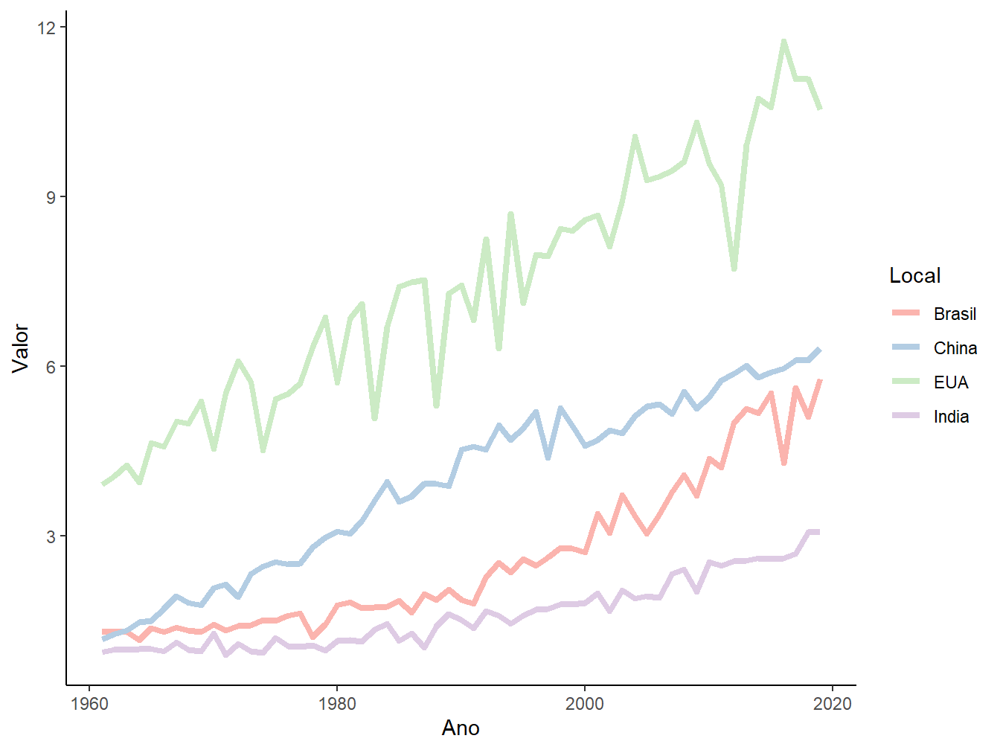
A figura 7.4 mostra os nomes das possíveis cores.
Figure 7.4: Nome das possíveis cores a serem definidas para os gráficos. Fonte: The R Graph Gallery.
Também, podemos alterar as colorações a partir de paletas de cores pré-definidas, utilizando a função scale_color_brewer(), tendo como argumento a palette =.
ggplot(produtiv_milho,
aes(x = Ano,
y = Valor,
color = Local))+
geom_line(size = 1.5)+
scale_color_brewer(palette = "Pastel1")+
theme_classic()
A figura 7.5 mostra as possíveis paletas de cores.

Figure 7.5: Nome das paletas de cores disponíveis para aplicarmos em nossos gráficos. Fonte: The R Graph Gallery.
Caso queira saber mais sobre as escalas de cores existentes no R, confira o post do site The R Graph Gallery: Dealing with colors in ggplot2.
Rótulos
Para trocar o nome das categorias na legenda, usa-se scale_"argumento"_discrete(), junto ao argumento labels. A seguir, citamos algumas das possibilidades:
scale_color_discrete(): para alterar o nome das variáveis contidas no argumentocolor;scale_fill_discrete(): para alterar o nome das variáveis contidas no argumentofill;scale_alpha_discrete(): para alterar o nome das variáveis contidas no argumentoalpha;scale_size_discrete(): para alterar o nome das variáveis contidas no argumentosize.
ggplot(produtiv_milho,
aes(x =Ano,
y = Valor,
color = Local))+
geom_line(size = 1.5)+
scale_color_discrete(labels = c("BR", "CHI", "IND", "EUA"))7.5 Gráficos de medidas-resumo
Voltemos aos dados dos alunos de Estatística Aplicada para fazermos alguns gráficos de medidas-resumo, importantes para observarmos a distribuição de valores.
dados_alunos# A tibble: 64 x 7
sexo idade altura peso horas_estudo media_ponderada futuro
<chr> <dbl> <dbl> <dbl> <dbl> <dbl> <chr>
1 M 23 1.75 80 2 7.5 academico
2 F 19 1.67 65 2 8.3 mercado
3 M 19 1.7 90 3 6.9 mercado
4 M 22 1.73 87 3 7.1 academico
5 M 19 1.83 71 2 6.5 mercado
6 M 19 1.8 80 3 8.6 mercado
7 M 20 1.9 90 2 7.8 academico
8 F 20 1.6 55 1 8 mercado
9 F 24 1.62 55 2 8.2 academico
10 F 18 1.64 60 2 7.3 mercado
# ... with 54 more rows7.5.1 Histogramas
Neste primeiro caso, faremos um histograma referente à média ponderada dos alunos. Esse tipo de gráfico é útil para verificar a frequência de uma variável e a sua distribuição.
Para isso, utilizamos a função geom_histogram(), sendo necessário indicar somente o atributo x =, pois o eixo y será construído, automaticamente, a partir da contagem dos valores correspondentes às variáveis x.
ggplot(dados_alunos)+
geom_histogram(aes(x = media_ponderada))Por padrão, a função define que o histograma apresenta 30 intervalos. Porém, este número não é o ideal para representar os nossos dados. Para redefini-lo, utilizamos o argumento bins.
ggplot(dados_alunos)+
geom_histogram(aes(x = media_ponderada),
bins = 8)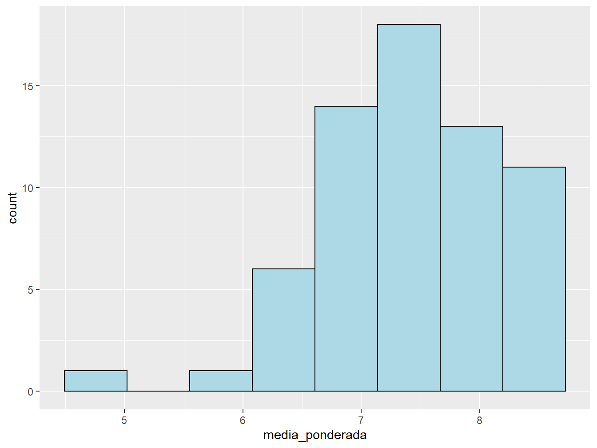
Podemos melhorar a aparência do histograma utilizando os argumentos color =, para colorir as bordas das barras, e o fill =, para colorir o seu interior.
ggplot(dados_alunos)+
geom_histogram(aes(x = media_ponderada),
bins = 8,
color = "black",
fill = "light blue")7.5.2 Gráfico de densidade
A construção do gráfico de densidade é semelhante ao histograma. Utilizamos a função geom_density(), atribuindo apenas uma variável contínua ao eixo x, sendo o eixo y construído automaticamente, de acordo com os valores da variável do eixo x. Ademais, podemos preencher seu interior com o argumento fill = e alterar a transparência da cor com o argumento alpha, cuja escala vai de 0 a 1, sendo 0 o valor máximo de transparência.
ggplot(dados_alunos,
aes(x = media_ponderada))+
geom_density(fill = "light green",
alpha = 0.3)Podemos representar mais de uma densidade em um mesmo gráfico. Basta atribuir uma variável categórica ao argumento fill = ou color =, a fim de distinguir as densidades.
ggplot(dados_alunos,
aes(x = altura,
fill = sexo))+
geom_density(alpha = 0.3)
7.5.3 Boxplot
Por fim, temos o boxplot, muito útil para observarmos a distribuição de valores de uma variável. Para fazermos os boxplots, utilizamos a função geom_boxplot().
ggplot(dados_alunos,
aes(y = media_ponderada))+
geom_boxplot()Nesse primeiro caso, fizemos um boxplot da média ponderada dos alunos, atribuindo os valores da variável no eixo y. Para conferir os valores dos quartis, além da amplitude, podemos utilizar a função summary(). Para calcular a distância interquartil - cujo cálculo se dá pela subtração entre o valor do 3º quartil e do 1º quartil - utilizamos a função IQR().
summary(dados_alunos$media_ponderada) Min. 1st Qu. Median Mean 3rd Qu. Max.
5.000 7.000 7.400 7.425 8.000 8.700 IQR(dados_alunos$media_ponderada)[1] 1Podemos incluir outras variáveis ao nosso boxplot, como, por exemplo, a variável futuro.
ggplot(dados_alunos,
aes(x = futuro,
y = media_ponderada))+
geom_boxplot()Neste caso, podemos ver a distribuição da média ponderada dos alunos e alunas de acordo com as perspectivas futuras de cada um. Perceba que a variável categórica futuro foi atribuída ao eixo x.
Agora, caso se queira dividir os boxplots anteriores de acordo com o sexo, podemos atribui-la ao argumento fill.
ggplot(dados_alunos,
aes(x = futuro,
y = media_ponderada,
fill = sexo))+
geom_boxplot()
Assim, podemos observar a distribuição das médias ponderadas de acordo com o sexo e a perspectiva futura.
7.6 Juntar gráficos diferentes
Temos a possibilidade de juntar gráficos diferentes em uma mesma apresentação. Para isso, utilizamos o pacote patchwork.
install.packages("patchwork")library(patchwork)O pacote funciona de maneira bem simples. Para juntarmos gráficos, devemos salvá-los em um objeto e, posteriomente, uni-los com um sinal de +. Veja o exemplo a seguir:
# Boxplot salvo no objeto "g1"
g1 <- ggplot(dados_alunos,
aes(x = futuro,
y = media_ponderada,
fill = sexo))+
geom_boxplot()
# Gráfico de densidade salvo no objeto "g2"
g2 <- ggplot(dados_alunos,
aes(x = altura,
fill = sexo))+
geom_density(alpha = 0.3)
# Unindo os gráficos "g1" e "g2"
g1 + g2Podemos dispô-los um embaixo do outro com o operador /.
g1 / g2
Além disso, podemos inserir mais gráficos ao conjunto. Nesse caso, incluiremos o histograma.
g3 <- ggplot(dados_alunos)+
geom_histogram(aes(x = media_ponderada),
bins = 8,
color = "black",
fill = "light blue")
(g1 + g2) / g3
g1 + (g2 / g3)Assim, dependendo da combinação de operações entre objetos, a partir do pacote patchwork, é possível dispor os gráficos de diferentes formas.
Como visto ao longo deste capítulo, percebemos que o pacote ggplot2 possui ferramentas poderosas e versáteis para lidar com gráficos. Há diversas outras funcionalidades presentes no pacote, as quais podem (e devem) ser exploradas. Contudo, neste primeiro momento, o que foi exposto se apresenta como uma base para possibilitar a execução dos primeiros gráficos em R, além de ser a porta de entrada ao leitor para que possa aprofundar e aprimorar seus gráficos de maneira mais independente.
Para os leitores que desejam aprofundar o conhecimento no pacote ggplot2, deixo como recomendação alguns livros, todos disponíveis gratuitamente na web:
R Graphics Cookbook - Winston Chang;
ggplot2: Elegant Graphics for Data Analysis - Hadley Wickham;
R Gallery Book - Kyle W. Brown.